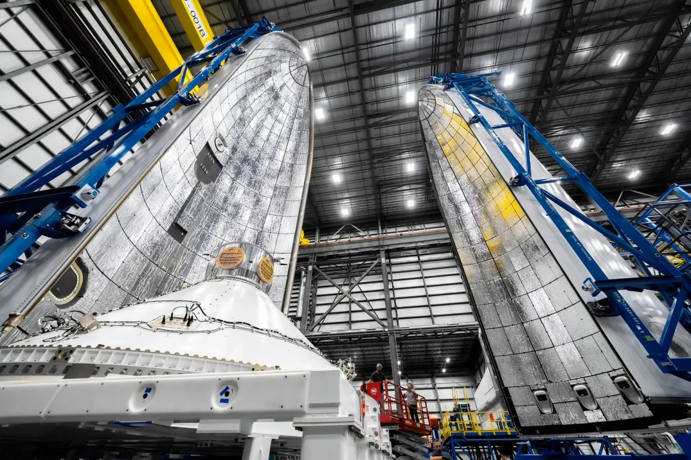
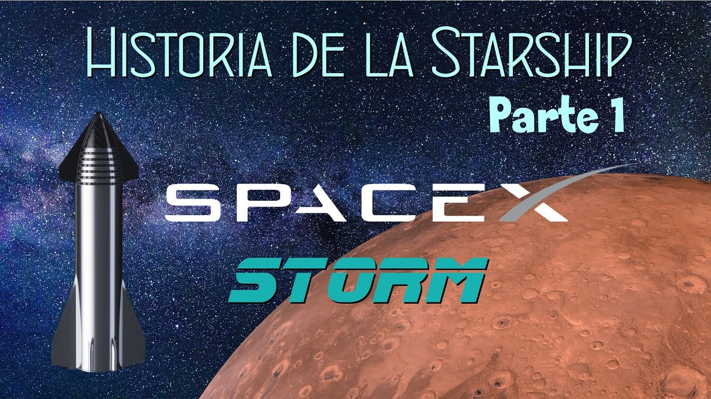

Notícies:
Blue Origin afirma que el primer llançament del New Glenn continua previst per al 2024
Blue Origin es mostra optimista i afirma que al vol inaugural del seu nou cohet, el New Glenn, es fara aquest 2024 tot i no poder complir amb la data anunciada de llançar-lo el 9 de desembre.
Elon Musk vol ara la seva pròpia ciutat: Starbase, el quarter general de SpaceX
Elon Musck ha solicitat a Texas que Starbase, el complex industrial i base d'operacions d'SpaceX, es converteixi de manera oficial en un nou municipi.

La NASA revela per què el seu helicòpter Ingenuity es va estavellar a Mart
La NASA revela quina va ser la causa que va portar a l'Ingenuity, el primer helicopter en volar per Març, a un accident que va causar la perdua del sorprenent demostrador tecològic.

Vídeos:
Actualitat i notícies de l'ESPAI [Setmana 49] | 🚀CDM News
Vídeo en espanyol amb les notícies més destacades del sector aeroespacial a nivell mundial. (Recomano veure vídeos anteriors per consultar més notícies)
Història de la Starship: Com SpaceX i Elon Musk volen portar-nos a Mart. Part 1
Primera part d'una sèrie de vídeos en espanyol dedicats a repassar la història i desenvolupament de la nau Starship. (Recomano veure tots els vídeos ja que aquesta sèrie és una cronologia molt detallada).
